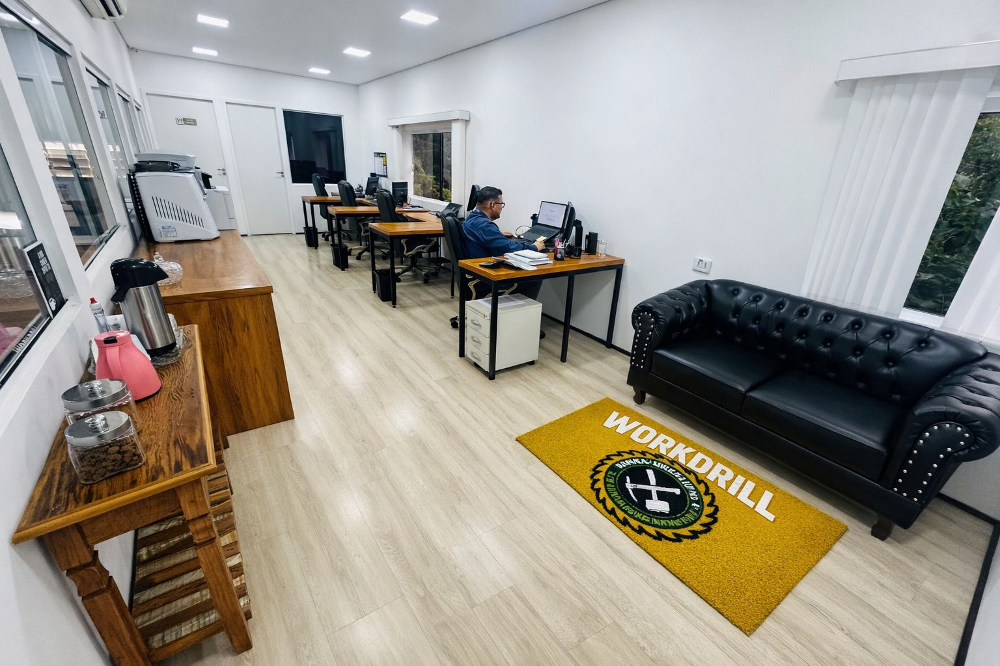
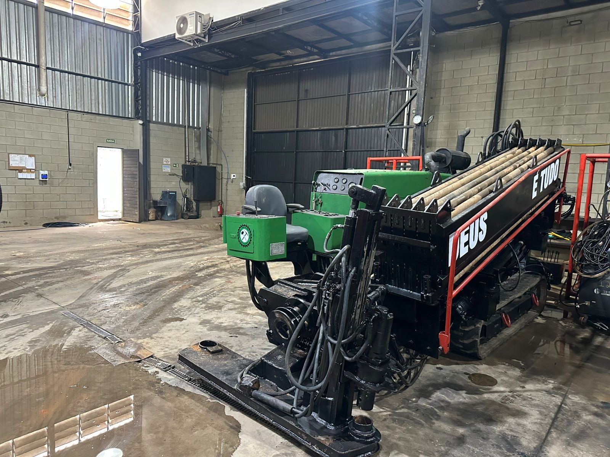
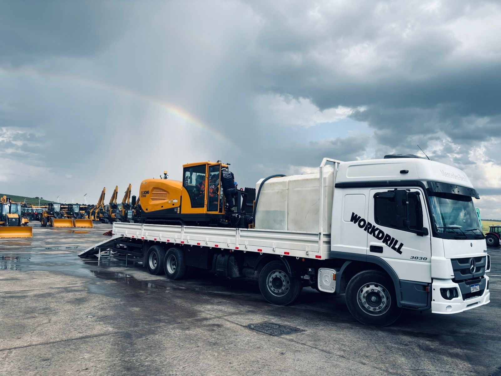
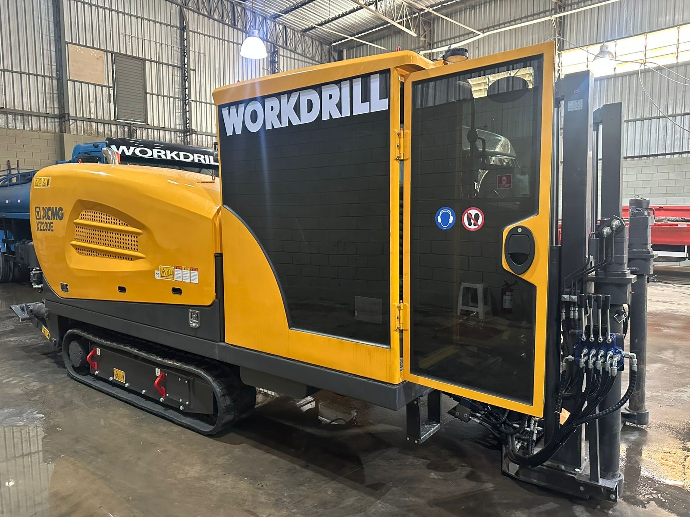
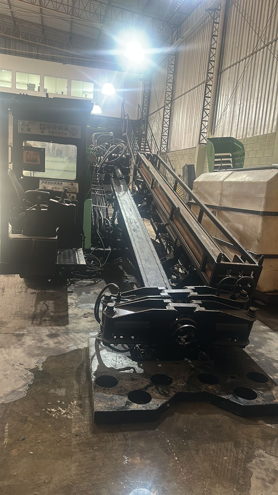
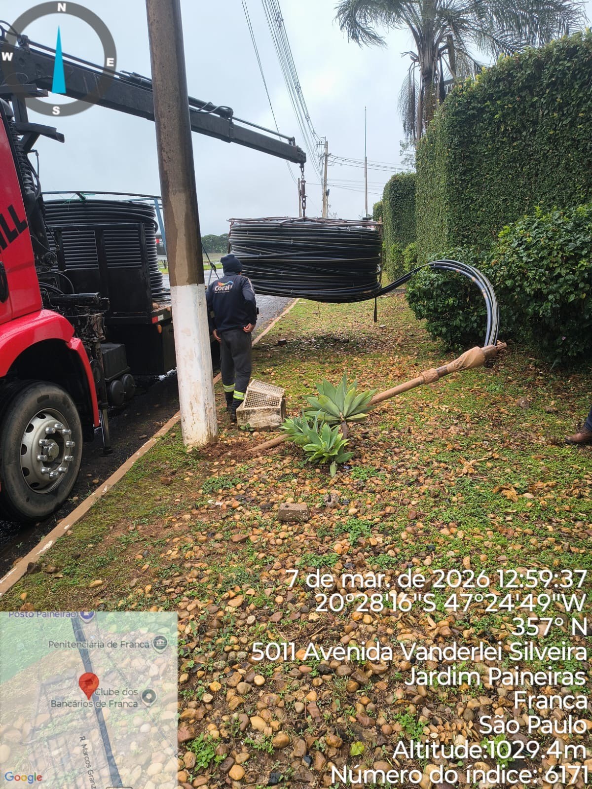
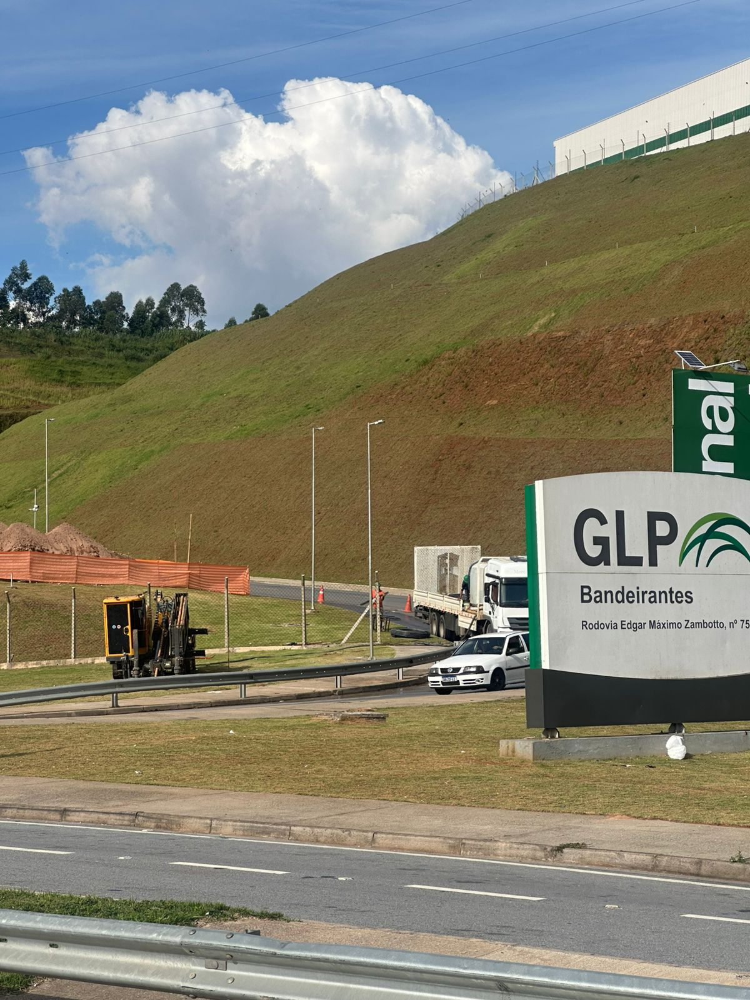

Especialistas em Construção de Redes Subterrâneas e Engenharia de Alta Performance
Soluções completas de engenharia subterrânea com Perfuração Horizontal Dirigida (MND), infraestrutura óptica e redes de telecomunicação, pautadas em rigor técnico e total segurança operacional.
Engenharia de Precisão e Autonomia Operacional Completa
Com foco em engenharia de alta performance e rigor técnico, a Workdrill lidera a execução de obras de infraestrutura subterrânea e redes de telecomunicação de grande porte. Unimos equipamentos de última geração e tecnologia em MND (Método Não Destrutivo) a uma equipe própria altamente qualificada, garantindo precisão absoluta, mitigação de riscos e cumprimento rigoroso de cronogramas.
Corpo Técnico Próprio (100% CLT)
Garantia de segurança jurídica, conformidade com as normas regulamentadoras (NRs) e treinamento contínuo, assegurando alta qualidade e zero terceirização operacional.
Frota e Perfuratrizes Próprias
Autonomia operacional irrestrita. Dispomos de maquinário pesado moderno e veículos próprios de suporte logístico, eliminando gargalos de locação e atrasos.
Logística Estratégica e Capilaridade
Capacidade de mobilização rápida e suporte operacional ágil em todo o território de São Paulo, inclusive em áreas de alta complexidade urbana.

Nossos Pilares Operacionais
Agilidade Logística
Mobilização ágil e capacidade de atendimento contínuo sob quaisquer condições climáticas e logísticas urbanas.
Conformidade Técnica
Rígida conformidade técnica com normas da ABNT, NRs vigentes e exigências das principais concessionárias.
Telemetria e Precisão
Mapeamento tridimensional do solo via Georadar (GPR) e rádio-detecção para mitigação total de interferências.
Soluções Completas em Engenharia Subterrânea
Soluções integradas com corpo operacional próprio composto por engenheiros, projetistas, mapeadores e técnicos de lançamento de cabos ópticos.
Perfuração Horizontal Dirigida (MND)
Instalação de tubulações subterrâneas sem necessidade de abertura de valas a céu aberto...
Instalação de Dutos (MND/MD)
Métodos destrutivos e não destrutivos para implantação de tubulações em PEAD e termofusão...
Redes Subterrâneas
Construção completa de infraestruturas subterrâneas para telecomunicações, saneamento e energia...
Lançamento de Cabos Ópticos
Lançamento de cabos ópticos aéreos e subterrâneos auto-sustentados com reforço mecânico...
Infraestrutura Óptica
Implantação de anéis ópticos, entroncamentos metropolitanos e redes de acesso modernas...
Fusão de Fibra Óptica
Emendas de precisão por fusão de arco voltaico com alinhamento pelo núcleo da fibra...
Mapeamento Subterrâneo
Detecção e cadastramento de redes de utilidade existentes para projetos de infraestrutura...
Georadar (GPR)
Varredura do solo com ondas eletromagnéticas de alta frequência (1 a 1000 MHz) para detectar interferências...
Instalação de Caixas Subterrâneas
Implantação de caixas de passagem e de emenda em calçadas e vias públicas, desde a topografia do solo...
Conectorização de Cabos
Terminação e conectarização de cabos ópticos e coaxiais em caixas de emenda e distribuidores (DIO)...
Projetos Técnicos
Elaboração de plantas, perfis de furos direcionais, cronogramas físicos e estudos de viabilidade...
Manutenção de Redes
Suporte completo, técnico e operacional para redes de transmissão ativas e manutenção preventiva...
Nossa Engenharia & Frota Pesada
Controle operacional completo. Dispomos de frota e perfuratrizes de última geração para entrega de alta capacidade sem terceirizações.






Operações Reais em Campo
Registros reais de nossas equipes operando com precisão e segurança em vias de tráfego denso e rodovias.
Precisão Cirúrgica em Áreas de Alta Complexidade
A implantação de infraestrutura subterrânea exige precisão e telemetria avançada. Nossa equipe de navegação monitora em tempo real a trajetória e a inclinação da broca piloto, evitando interferências.
Georadar e Mapeamento
Mapeamento e varredura prévia com Georadar (GPR) para identificação tridimensional de tubulações existentes.
Perfuração Piloto
Abertura do furo piloto direcional guiado eletronicamente por sonda e receptor digital.
Alargamento e Puxamento
Alargamento progressivo do túnel e instalação por tração controlada do duto PEAD, preservando sua integridade estrutural.
Por Que a Workdrill?
Construímos infraestrutura crítica com foco absoluto em segurança, prazo e tecnologia de ponta.
Segurança Jurídica e CLT
Corpo operacional próprio certificado em todas as normas regulamentadoras (NRs), garantindo estabilidade, conformidade legal e qualidade em campo.
Maquinário Próprio Avançado
Frota robusta composta por perfuratrizes direcionais de alta potência, localizadores Digitrak F5 e caminhões de suporte logístico de propriedade da Workdrill.
Prontidão e Logística
Logística integrada com ampla capilaridade no estado de São Paulo, assegurando estabilidade nos prazos e excelência nas entregas.
Parceiros e Concessionárias que Confiam na Workdrill
Estamos Prontos para o Seu Projeto
Entre em contato para alinhar especificações técnicas, solicitar propostas ou agendar uma reunião comercial.